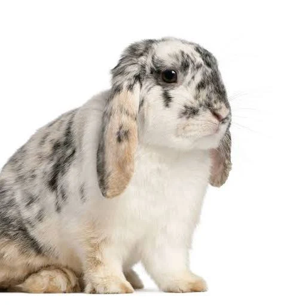

Baran Francuski to rasa, która łączy w sobie unikalny wygląd królików zwisłouchych z imponującymi rozmiarami ras olbrzymich. Powstał z krzyżówki Barana Angielskiego z Olbrzymem Normandzkim. To potężny, muskularny królik o majestatycznej postawie i grubych, nisko osadzonych uszach. Najważniejsze cechy rasy: Wygląd: Szeroka, mocna głowa z tzw. "koroną" u nasady uszu, które zwisają pionowo w dół i są grube na końcach. Waga: Dorosłe osobniki ważą zazwyczaj od 5 do 5,5 kg, a często nawet więcej. Charakter: Bardzo inteligentne, stabilne emocjonalnie i przyjacielskie króliki, które lubią pieszczoty. Pielęgnacja: Wymaga regularnej kontroli czystości uszu, ponieważ ich oklapnięta budowa sprzyja infekcjom.